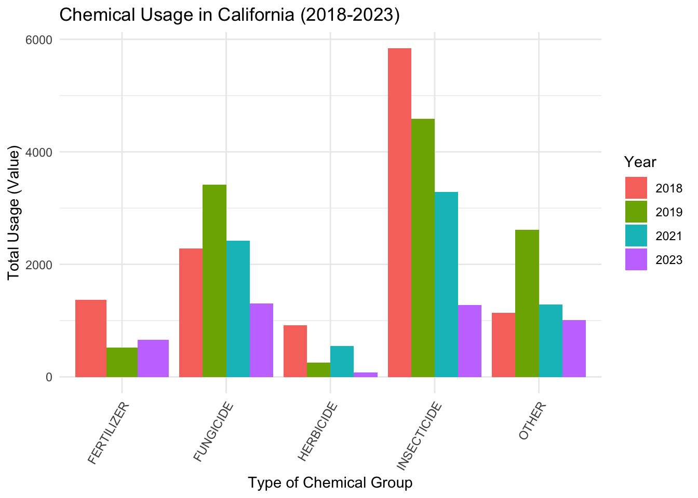
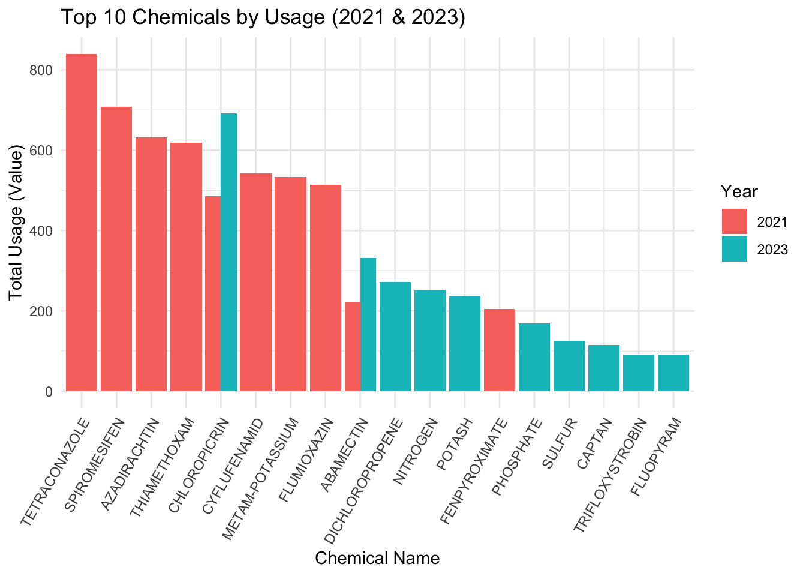
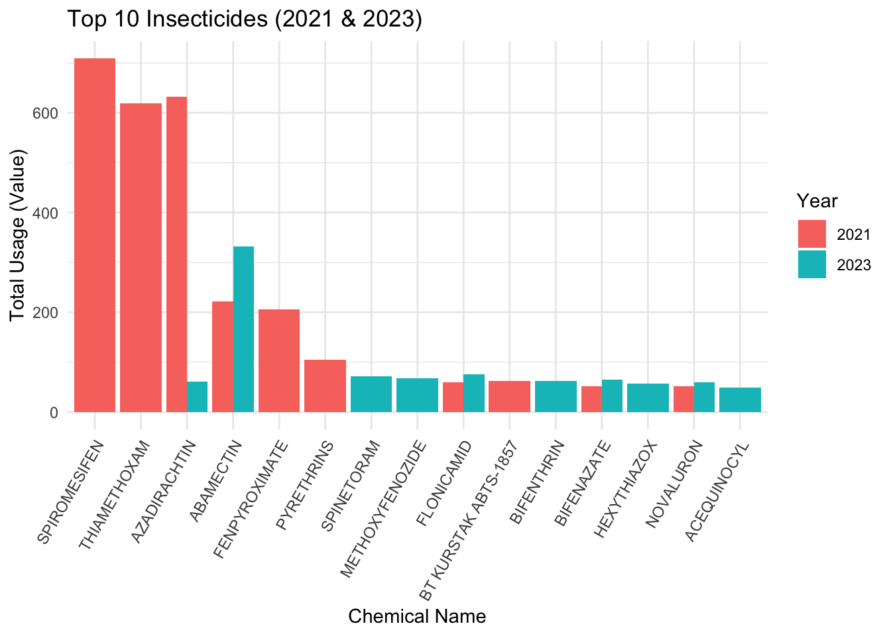
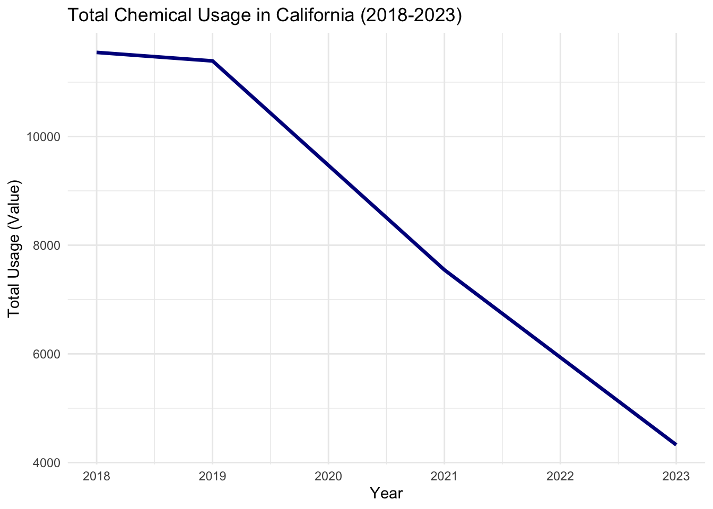

# Load necessary libraries
library(tidyverse)── Attaching core tidyverse packages ──────────────────────── tidyverse 2.0.0 ──
✔ dplyr 1.1.4 ✔ readr 2.1.5
✔ forcats 1.0.0 ✔ stringr 1.5.1
✔ ggplot2 3.5.1 ✔ tibble 3.2.1
✔ lubridate 1.9.3 ✔ tidyr 1.3.1
✔ purrr 1.0.2
── Conflicts ────────────────────────────────────────── tidyverse_conflicts() ──
✖ dplyr::filter() masks stats::filter()
✖ dplyr::lag() masks stats::lag()
ℹ Use the conflicted package (<http://conflicted.r-lib.org/>) to force all conflicts to become errors# Load the datasets
census <- read.csv("census_clean_output.csv")
survey <- read.csv("survey_clean_output.csv")
# Explore dataset structures
print("Census Dataset Structure:")[1] "Census Dataset Structure:"str(census)'data.frame': 953 obs. of 13 variables:
$ Program : chr "CENSUS" "CENSUS" "CENSUS" "CENSUS" ...
$ Year : int 2022 2022 2022 2022 2022 2022 2022 2022 2022 2022 ...
$ Period : chr "YEAR" "YEAR" "YEAR" "YEAR" ...
$ Geo.Level : chr "NATIONAL" "NATIONAL" "NATIONAL" "NATIONAL" ...
$ State : chr "US TOTAL" "US TOTAL" "US TOTAL" "US TOTAL" ...
$ State.ANSI : int -1 -1 -1 -1 -1 -1 -1 -1 -1 -1 ...
$ Sub_Type : chr "OTHER" "OTHER" "OTHER" "OTHER" ...
$ Operation_Type : chr "ACRES BEARING" "ACRES NON-BEARING" "ACRES NON-BEARING" "ACRES NON-BEARING" ...
$ Domain : chr "AREA GROWN" "AREA GROWN" "AREA GROWN" "AREA GROWN" ...
$ Category_Class : chr "AREA GROWN" "AREA GROWN" "AREA GROWN" "AREA GROWN" ...
$ Additional_Info: chr "0.1 TO 0.9 ACRES" "0.1 TO 0.9 ACRES" "1.0 TO 4.9 ACRES" "100 OR MORE ACRES" ...
$ Value : int 963 236 535 666 244 210 547 315 161 146 ...
$ CV.... : chr "5.6" "13.2" "5.1" "4.2" ...print("Survey Dataset Structure:")[1] "Survey Dataset Structure:"str(survey)'data.frame': 1432 obs. of 15 variables:
$ Program : chr "SURVEY" "SURVEY" "SURVEY" "SURVEY" ...
$ Year : int 2024 2024 2023 2023 2023 2023 2023 2023 2023 2023 ...
$ Period : chr "YEAR" "YEAR" "MARKETING YEAR" "MARKETING YEAR" ...
$ Geo.Level : chr "NATIONAL" "NATIONAL" "NATIONAL" "NATIONAL" ...
$ State : chr "US TOTAL" "US TOTAL" "US TOTAL" "US TOTAL" ...
$ State.ANSI : int -1 -1 -1 -1 -1 6 12 -1 -1 -1 ...
$ Market_Category: chr "FRESH MARKET" "PROCESSING" "OTHER" "FRESH MARKET" ...
$ Measure_Type : chr "PRICE RECEIVED, ADJUSTED BASE" "PRICE RECEIVED, ADJUSTED BASE" "PRICE RECEIVED" "PRICE RECEIVED" ...
$ Unit_Type : chr "$ / CWT" "$ / TON" "$ / CWT" "$ / CWT" ...
$ Domain : chr "TOTAL" "TOTAL" "TOTAL" "TOTAL" ...
$ Chemical_Group : chr "NOT SPECIFIED" "NOT SPECIFIED" "NOT SPECIFIED" "NOT SPECIFIED" ...
$ Chemical_Name : chr "NOT SPECIFIED" "NOT SPECIFIED" "NOT SPECIFIED" "NOT SPECIFIED" ...
$ Chemical_Code : int NA NA NA NA NA NA NA NA NA NA ...
$ Value : num 10.9 4.04 123 142 43.8 121 147 142 43.8 485 ...
$ CV.... : logi NA NA NA NA NA NA ...# Filter survey data for California-specific information
california_data <- subset(survey, toupper(State) == "CALIFORNIA")
# Exclude unspecified or total values in `Chemical_Name`
cleaned_data <- subset(california_data,
!(Chemical_Name %in% c("NOT SPECIFIED", "TOTAL")))
# Focus on data from the past five years (2018-2023)
recent_data <- cleaned_data[cleaned_data$Year >= 2018, ]
# Check if recent_data is empty
if (nrow(recent_data) == 0) {
stop("No data available after applying the filters.")
}
# Summary and visualization of survey data
# Summarize chemical usage by group and year
usage_summary <- recent_data %>%
group_by(Chemical_Group, Year) %>%
summarise(Total_Usage = sum(Value, na.rm = TRUE), .groups = 'drop')
# Plot chemical usage by category
ggplot(usage_summary, aes(x = Chemical_Group, y = Total_Usage, fill = as.factor(Year))) +
geom_bar(stat = "identity", position = "dodge") +
labs(title = "Chemical Usage in California (2018-2023)",
x = "Type of Chemical Group",
y = "Total Usage (Value)",
fill = "Year") +
theme_minimal() +
theme(axis.text.x = element_text(angle = 60, hjust = 1))
# Analyze top chemicals for specific years
chemicals_by_year <- recent_data %>%
group_by(Chemical_Name, Year) %>%
summarise(Total_Usage = sum(Value, na.rm = TRUE), .groups = 'drop')
top_chemicals <- function(year, n = 10) {
chemicals_by_year %>%
filter(Year == year) %>%
arrange(desc(Total_Usage)) %>%
head(n)
}
top_2023 <- top_chemicals(2023)
top_2021 <- top_chemicals(2021)
# Combine data for comparison
comparison_data <- bind_rows(top_2023, top_2021)
# Plot top chemicals for 2021 and 2023
ggplot(comparison_data, aes(x = reorder(Chemical_Name, -Total_Usage),
y = Total_Usage, fill = as.factor(Year))) +
geom_bar(stat = "identity", position = "dodge") +
labs(title = "Top 10 Chemicals by Usage (2021 & 2023)",
x = "Chemical Name",
y = "Total Usage (Value)",
fill = "Year") +
theme_minimal() +
theme(axis.text.x = element_text(angle = 60, hjust = 1))
# Filter for insecticides
insecticides <- recent_data %>%
filter(Chemical_Group == "INSECTICIDE") %>%
group_by(Chemical_Name, Year) %>%
summarise(Total_Usage = sum(Value, na.rm = TRUE), .groups = 'drop')
top_insecticides <- function(year, n = 10) {
insecticides %>%
filter(Year == year) %>%
arrange(desc(Total_Usage)) %>%
head(n)
}
insecticides_2023 <- top_insecticides(2023)
insecticides_2021 <- top_insecticides(2021)
# Combine and plot insecticide data
insecticide_comparison <- bind_rows(insecticides_2023, insecticides_2021)
ggplot(insecticide_comparison, aes(x = reorder(Chemical_Name, -Total_Usage),
y = Total_Usage, fill = as.factor(Year))) +
geom_bar(stat = "identity", position = "dodge") +
labs(title = "Top 10 Insecticides (2021 & 2023)",
x = "Chemical Name",
y = "Total Usage (Value)",
fill = "Year") +
theme_minimal() +
theme(axis.text.x = element_text(angle = 60, hjust = 1))
# Total usage trend over years
total_usage <- recent_data %>%
group_by(Year) %>%
summarise(Annual_Usage = sum(Value, na.rm = TRUE), .groups = 'drop')
ggplot(total_usage, aes(x = Year, y = Annual_Usage)) +
geom_line(color = "darkblue", size = 1.2) +
labs(title = "Total Chemical Usage in California (2018-2023)",
x = "Year",
y = "Total Usage (Value)") +
theme_minimal()Warning: Using `size` aesthetic for lines was deprecated in ggplot2 3.4.0.
ℹ Please use `linewidth` instead.
# Census Data Analysis
# Quick summary of census data
census_summary <- census %>%
summarise(across(where(is.numeric), list(mean = mean, sd = sd, median = median), na.rm = TRUE))Warning: There was 1 warning in `summarise()`.
ℹ In argument: `across(...)`.
Caused by warning:
! The `...` argument of `across()` is deprecated as of dplyr 1.1.0.
Supply arguments directly to `.fns` through an anonymous function instead.
# Previously
across(a:b, mean, na.rm = TRUE)
# Now
across(a:b, \(x) mean(x, na.rm = TRUE))print("Census Data Summary:")[1] "Census Data Summary:"print(census_summary) Year_mean Year_sd Year_median State.ANSI_mean State.ANSI_sd
1 2021.127 1.213387 2022 29.69675 16.01592
State.ANSI_median Value_mean Value_sd Value_median
1 31 111.4008 169.1082 36# Check unique values in census for specific fields
unique_census_fields <- lapply(census, unique)
print("Unique Census Fields:")[1] "Unique Census Fields:"print(unique_census_fields)$Program
[1] "CENSUS"
$Year
[1] 2022 2021 2019
$Period
[1] "YEAR"
$Geo.Level
[1] "NATIONAL" "STATE"
$State
[1] "US TOTAL" "ALABAMA" "ALASKA" "ARIZONA"
[5] "ARKANSAS" "CALIFORNIA" "COLORADO" "CONNECTICUT"
[9] "DELAWARE" "FLORIDA" "GEORGIA" "HAWAII"
[13] "IDAHO" "ILLINOIS" "INDIANA" "IOWA"
[17] "KANSAS" "KENTUCKY" "LOUISIANA" "MAINE"
[21] "MARYLAND" "MASSACHUSETTS" "MICHIGAN" "MINNESOTA"
[25] "MISSISSIPPI" "MISSOURI" "MONTANA" "NEBRASKA"
[29] "NEVADA" "NEW HAMPSHIRE" "NEW JERSEY" "NEW MEXICO"
[33] "NEW YORK" "NORTH CAROLINA" "NORTH DAKOTA" "OHIO"
[37] "OKLAHOMA" "OREGON" "PENNSYLVANIA" "RHODE ISLAND"
[41] "SOUTH CAROLINA" "SOUTH DAKOTA" "TENNESSEE" "TEXAS"
[45] "UTAH" "VERMONT" "VIRGINIA" "WASHINGTON"
[49] "WEST VIRGINIA" "WISCONSIN" "WYOMING"
$State.ANSI
[1] -1 1 2 4 5 6 8 9 10 12 13 15 16 17 18 19 20 21 22 23 24 25 26 27 28
[26] 29 30 31 32 33 34 35 36 37 38 39 40 41 42 44 45 46 47 48 49 50 51 53 54 55
[51] 56
$Sub_Type
[1] "OTHER" "ORGANIC" "ORGANIC, FRESH MARKET"
[4] "ORGANIC, PROCESSING"
$Operation_Type
[1] "ACRES BEARING" "ACRES NON-BEARING"
[3] "OPERATIONS WITH AREA BEARING" "OPERATIONS WITH AREA GROWN"
[5] "OPERATIONS WITH AREA NON-BEARING" "ACRES GROWN"
[7] "OPERATIONS WITH AREA HARVESTED" "OPERATIONS WITH SALES"
[9] "ACRES HARVESTED" "PRODUCTION, MEASURED IN CWT"
[11] "SALES, MEASURED IN CWT"
$Domain
[1] "AREA GROWN" "TOTAL" "ORGANIC STATUS"
$Category_Class
[1] "AREA GROWN" "NOT SPECIFIED" "ORGANIC STATUS"
$Additional_Info
[1] "0.1 TO 0.9 ACRES" "1.0 TO 4.9 ACRES" "100 OR MORE ACRES"
[4] "15.0 TO 24.9 ACRES" "25.0 TO 49.9 ACRES" "5.0 TO 14.9 ACRES"
[7] "50.0 TO 99.9 ACRES" "NOT SPECIFIED" "NOP USDA CERTIFIED"
$Value
[1] 963 236 535 666 244 210 547 315 161 146 131 510 147 514 562 17 43 22
[19] 200 16 162 171 9 107 119 18 11 14 3 45 50 8 4 1 24 116
[37] 128 12 71 80 138 370 46 165 676 409 27 438 38 40 169 720 189 74
[55] 114 36 47 52 626 212 76 651 32 10 85 30 20 39 64 156 37 97
[73] 44 5 180 469 249 54 82 19 280 2 269 21 121 150 41 72 78 175
[91] 208 33 154 184 220 262 223 248 144 25 126 145 42 49 152 218 182 293
[109] 371 193 94 135 15 129 142 26 258 303 233 70 164 88 324 714 59 195
[127] 92 115 415 875 31 91 266 93 420 305 96 462 55 136 308 401 51 35
[145] 7 48 112 134 81 102 257 137 267 140 263 751 306 328 913 66 241 439
[163] 277 475 6 221 234 385 118 174 13 61 322 340 60 445 511 361 393 87
[181] 106 468 122 681 494 188 294 206 57 313 663 329 163 756 411 628 444 187
[199] 664 89 153 707 713 192 155 166 225 86 117 168 111 125 205 227 203 231
[217] 67 149 856 160 287 239 307 28 65 529 726 197 261 75 139 546 540 141
[235] 183 704 53 62 504 127 251 564 749 659 90 132 734 360 522 426 580 568
[253] 170 181 177 680 100 288 158 485 435 73 34 300 880 341 332 219 23
$CV....
[1] "5.6" "13.2" "5.1" "4.2" "34.1" "37.3" "9.9" "(H)" "25.4" "17.2"
[11] "11.9" "7.3" "44.0" "18.3" "6.4" "27.9" "19.0" "40.9" "8.2" "72.6"
[21] "16.9" "17.5" "80.0" "19.7" "26.9" "(L)" "29.4" "33.8" "93.3" "25.8"
[31] "15.8" "38.0" "33.4" "33.0" "42.1" "36.0" "35.7" "34.2" "31.6" "45.6"
[41] "91.9" "42.5" "31.8" "23.5" "83.7" "52.1" "50.2" "39.6" "98.6" "34.3"
[51] "43.5" "27.1" "63.8" "42.6" "93.5" "27.8" "92.0" "39.5" "47.4" "68.3"
[61] "77.8" "58.8" "73.5" "47.0" "59.7" "18.2" "18.8" "26.5" "22.7" "18.6"
[71] "8.6" "15.9" "19.4" "5.3" "46.0" "40.2" "37.9" "76.1" "22.2" "20.1"
[81] "59.9" "13.4" "23.3" "33.2" "21.1" "59.0" "22.5" "18.7" "41.1" "12.6"
[91] "82.2" "68.4" "13.0" "12.7" "31.0" "16.0" "2.9" "29.0" "27.3" "33.5"
[101] "22.8" "29.2" "15.4" "14.4" "13.7" "11.7" "5.4" "14.1" "7.1" "10.2"
[111] "12.1" "10.7" "17.7" "16.8" "19.5" "24.0" "21.8" "39.3" "28.1" "28.0"
[121] "32.9" "42.3" "45.4" "42.7" "33.9" "63.2" "35.3" "31.3" "18.9" "12.5"
[131] "14.2" "4.8" "4.1" "11.4" "11.3" "19.6" "13.5" "29.6" "9.6" "20.0"
[141] "10.4" "67.2" "10.1" "8.7" "61.9" "11.6" "25.3" "19.3" "44.4" "11.8"
[151] "15.7" "12.0" "71.2" "11.2" "17.0" "12.2" "37.1" "11.5" "10.8" "20.3"
[161] "14.8" "30.2" "11.0" "24.4" "89.2" "65.3" "74.1" "8.0" "10.0" "49.6"
[171] "43.0" "26.8" "21.3" "38.3" "25.7" "78.2" "16.3" "23.6" "25.1" "24.7"
[181] "24.6" "23.4" "21.7" "7.2" "6.3" "6.8" "38.1" "47.7" "40.1" "59.5"
[191] "14.3" "11.1" "31.2" "6.0" "51.1" "5.8" "27.4" "6.1" "56.5" "26.7"
[201] "32.2" "34.4" "36.6" "94.7" "51.5" "31.4" "52.5" "32.7" "54.3" "60.4"
[211] "49.2" "14.9" "16.6" "14.0" "13.9" "6.2" "10.5" "36.2" "15.2" "18.1"
[221] "64.1" "23.0" "39.2" "26.4" "60.7" "40.5" "44.7" "58.4" "40.0" "24.3"
[231] "77.5" "39.4" "6.7" "12.9" "23.2" "84.2" "50.7" "75.0" "22.4" "30.7"
[241] "16.4" "14.5" "38.9" "35.2" "13.6" "34.7" "17.8" "24.9" "17.1" "39.1"
[251] "8.8" "37.5" "9.3" "6.9" "30.6" "23.7" "42.2" "22.1" "27.0" "12.8"
[261] "12.3" "28.5" "34.5" "37.8" "69.5" "42.0" "72.3" "54.4" "48.5" "31.9"
[271] "21.2" "16.1" "25.2" "21.0" "20.9" "43.7" "25.0" "38.5" "22.9" "64.7"
[281] "17.4" "57.2" "88.3" "13.3" "71.8" "85.5" "39.7" "95.9" "97.2" "50.6"
[291] "69.4" "13.8" "53.2" "42.4" "44.1" "49.1" "25.5" "8.4" "53.3" "9.4"
[301] "82.0" "56.0" "5.7" "48.3" "6.5" "5.5" "41.8" "67.1" "89.4" "74.2"
[311] "19.2" "20.4" "60.0" "74.4" "99.8" "57.3" "92.4" "80.4" "78.0" "87.5"
[321] "71.4" "95.4" "94.9" "97.5" "96.4" "76.0" "69.1" "72.0" "62.4" "38.4"
[331] "31.1" "35.4" "89.6" "79.2" "76.5" "47.2" "32.5" "43.9" "45.8" "54.0"
[341] "43.6" "62.9" "71.5" "58.7" "76.7" "67.5" "72.1" "70.4" "54.2" "45.7"
[351] "48.1" "49.0" "43.3" "38.8" "73.0" "82.3" "73.6" "82.8" "2.7" "2.8"
[361] "34.8" "30.4" "36.7" "33.3" "79.0" "39.8" "61.3" "56.2" "59.2" "69.8"
[371] "94.6" "94.1" "47.9" "28.7" "95.0" "66.3" "56.9" "95.2" "43.1" "76.3"
[381] "32.0" "58.3" "80.9" "56.3" "23.8" "55.9"# Correlation analysis (if applicable)
if (sum(sapply(census, is.numeric)) > 1) {
numeric_census <- census %>% select(where(is.numeric))
census_corr <- cor(numeric_census, use = "complete.obs")
print("Census Correlation Matrix:")
print(census_corr)
}[1] "Census Correlation Matrix:"
Year State.ANSI Value
Year 1.00000000 0.02387442 0.08525713
State.ANSI 0.02387442 1.00000000 -0.04325990
Value 0.08525713 -0.04325990 1.00000000# Visualization for census data (e.g., population trends, economic trends)
# Adjust field names based on actual data
if ("Year" %in% colnames(census) & "Population" %in% colnames(census)) {
ggplot(census, aes(x = Year, y = Population)) +
geom_line(color = "darkgreen") +
labs(title = "Population Trends Over Years",
x = "Year",
y = "Population") +
theme_minimal()
}